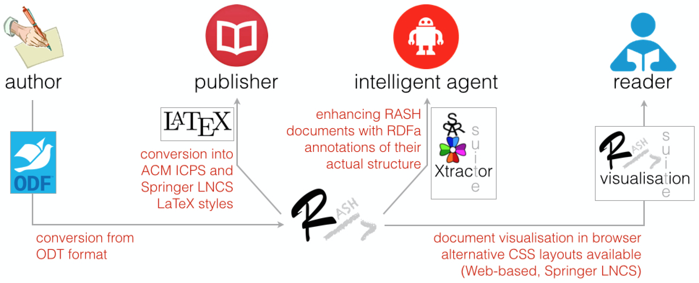

This paper introduces the RASH Framework, i.e., a set of specifications and tools for writing academic articles in RASH (a simplified version of HTML). RASH focuses strictly on writing the content of the paper (i.e., organisation of text + semantic annotations) and leaves all the issues about their validation, visualisation, conversion, and semantic data extraction to the various tools developed within the framework.
In the last months of 2014, several posts within technical mailing lists of the Web and Semantic Web community have discussed an evergreen topic in scholarly communication, i.e., how could authors of research papers submit their works in HTML rather than, say, PDF, MS Word or LaTeX. Besides the obvious justification of simplification and unification of data formats for drafting, submission and publication, an additional underlying rationale is that the adoption of HTML in the context of scientific publications would ease the embedding of semantic annotations, thus making a step towards the improvement of research communications thanks to already existing W3C standards such as RDFa and Turtle. The adoption of Web-first formats in scientific literature, i.e., HTML and RDF, is a necessary step towards the complex (and exciting) scenarios that the Semantic Publishing has promised us . However, they should support the needs of all the actors involved in the production, delivery and use of scholarly articles: authors, readers, publishers, and intelligent software agents.
Along the lines of other existing works on this topic (e.g., Linked Research project and ScholarlyMarkdown ), in this paper we introduce the RASH Framework, i.e., a set of specifications and tools for writing academic articles in RASH (an HTML+RDF-based markup language for writing scholarly documents) which aims at addressing all the aforementioned issues.
The rest of the paper is structured as follows. In we introduce the rationale for the creation of a new Web-first format for scholarly publication and we introduce the RASH Framework. In we provide a quick overview of all its additional tools, that are available in the Framework repository. Finally, in we conclude the paper sketching out some future developments.
Web-firstformat for research articles
Some works, e.g., Capadisli et al. , suggest not to force any particular HTML structure for research papers. In this way, the author of a paper is free to use any possible kinds of HTML linearisations for her scholarly text. This freedom could, thus, result in two main kinds of issues:
visualisation bottleneck – it may affect the correct use of existing, well-developed and pretty standard CSSs;
less focus on the research content – the fact that a certain paper is not visualised in a browser very well (or, worse, in a way that is not the one the author expects) could bring the author to work on the presentation of the text, rather than on focussing on the actual research context of the text.
To complicate an already complex scenario is the necessary involvement of publishers. Leaving the authors of using their own HTML format could be also counterproductive from a publisher's perspective, in particular when we speak about the possibility of adopting such HTML formats for regular conference/journal camera ready submissions.
The RASH Framework has been proposed in order to address all the aforementioned issues. It is a set of specifications and tools for writing academic articles in RASH, i.e., a markup language defined as a subset of HTML for writing scientific articles. A summary of the whole framework is introduced in .

The RASH Framework and its components addressing specific needs of different users.
The Research Articles in Simplified HTML (RASH) format is a markup language that restricts the use of HTML elements to only 25 elements for writing academic research articles, which is entirely based on a strong theory on structural patterns for XML documents . It allows authors to use RDFa annotations within any element of the language. In addition to RDFa, RASH makes available another way to add RDF statements to the document, i.e., the use of an element script (with the attribute type set to text/turtle
or to application/json+ld
) within the element head for adding plain Turtle or JSON-LD content.
Any RASH documents begins as a simple (X)HTML5 document, by specifying the generic HTML DOCTYPE followed by the document element html with the usual namespace (i.e, http://www.w3.org/1999/xhtml
). The element html contains the element head for defining metadata of the document according to the DCTERMS and PRISM standards, and the element body for including the whole content of the document.
In this section we introduce all the tools shown in that we have developed in order to support users in adopting RASH. All the software components of the RASH Framework are distributed under an ISC License, while the other components are distributed under a Creative Commons Attribution 4.0 International License.
Validation. RASH has been developed as a RelaxNG grammar. All the markup items it defines are fully compatible with the HTML5 specification. In order to check whether a document is compliant with RASH, we have developed a script to enable RASH users to check their documents simultaneously both against the specific requirements in the RASH RelaxNG grammar and also against the full set of HTML checks that the W3C Nu HTML Checker (a.k.a., HTML5 validator) does for all HTML documents (by checking all requirements given in the HTML specification).
Visualisation. The whole visualisation RASH documents is rendered by the browser in the current form by means of appropriate CSS3 stylesheets and javascript scripts developed for this purpose. We are actually using some external libraries, i.e., Bootstrap and JQuery, in order to guarantee the current clear visualisation and for adding additional tools to the user. As an example, the RASH version of this paper is available at http://www.essepuntato.it/2015/iswc/rash-demo-iswc2015.html.
Conversion. We have spent some effort in preparing XSLT 2.0 documents for converting RASH documents into different LaTeX styles, such as ACM ICPS and Springer LNCS. This is, actually, one of the crucial step to guarantee the use of RASH within international events and to be able to publish RASH documents in the official LaTeX format as required by the organisation committee of such events. In addition, we have already developed another XSLT 2.0 document to perform conversions from OpenOffice documents into RASH documents, which allows us to write a paper through the OpenOffice editor and then converting the related ODT file into RASH automatically.
Enhancement. A recent development of the RASH Framework has concerned the automatic enrichment of RASH documents with RDFa annotations defining the actual structure of such documents in terms of the Document Component Ontology (DoCO) . In particular, a Java application called SPAR Xtractor suite has been developed: it takes a RASH document as input and returns a new RASH document where all its markup elements have been annotated with their actual (structural) semantics.
In this paper we have introduced the RASH Framework, i.e., a set of specifications and tools for writing academic articles in RASH. We have discussed the rationale behind the development of RASH, and we have presented the language with all the validation/visualisation/conversion/extraction tools we have developed so far. As immediate future development, we plan to develop additional scripts for extracting RDF statements from RASH documents according to SPAR Ontologies (http://www.sparontologies.net), and to develop additional XSLT documents in order to convert DOCX documents into RASH and to convert RASH documents into several formats for scholarly communications, such as EPUB, DocBook, and LaTeX IEEE styles.
Shotton, D., Portwin, K., Klyne, G., & Miles, A. (2009). Adventures in Semantic Publishing: Exemplar Semantic Enhancements of a Research Article. PLoS Computational Biology, 5(4): e1000361. http://dx.doi.org/10.1371/journal.pcbi.1000361
Di Iorio, A., Peroni, S., Poggi, F., & Vitali, F. (2014). Dealing with structural patterns of XML documents. Journal of the American Society for Information Science and Technology, 65(9): 1884–1900. http://dx.doi.org/10.1002/asi.23088
Constantin, A., Peroni, S., Pettifer, S., Shotton, D., & Vitali, F. (in press). The Document Component Ontology (DoCO). To appear in Semantic Web. OA version available at http://www.semantic-web-journal.net/system/files/swj1016.pdf
Capadisli, S., Riedl, R., & Auer, S. (2015). Enabling Accessible Knowledge. In Proc. of CeDEM 2015. OA version available at http://csarven.ca/enabling-accessible-knowledge
Lin, T. T. Y., & Beales, G. (2015). ScholarlyMarkdown Syntax Guide. Guide, 31 January 2015. http://scholarlymarkdown.com/Scholarly-Markdown-Guide.html
Bourne, P. E., Clark, T., Dale, R., de Waard, A., Herman, I., Hovy, E. H., & Shotton, D. (2011). FORCE11 White Paper: Improving The Future of Research Communications and e-Scholarship. White paper, 28 October 2011. FORCE11. https://www.force11.org/white_paper
The full project is available at https://github.com/essepuntato/rash/. Please use the hashtag #rashfwk for referring to any of the items defined in the RASH Framework via Twitter or other social platforms.
Please refer to the official RASH documentation, available at http://cs.unibo.it/save-sd/rash, for a complete introduction of all the elements and attributes that can be used in RASH documents.